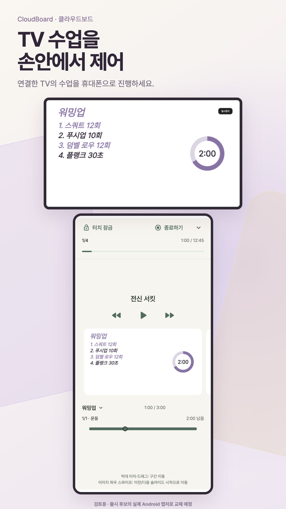
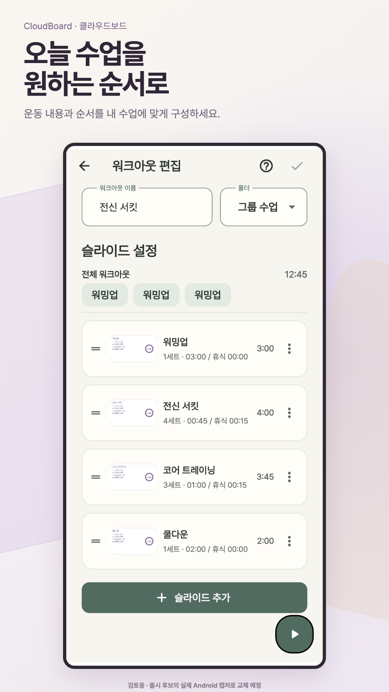
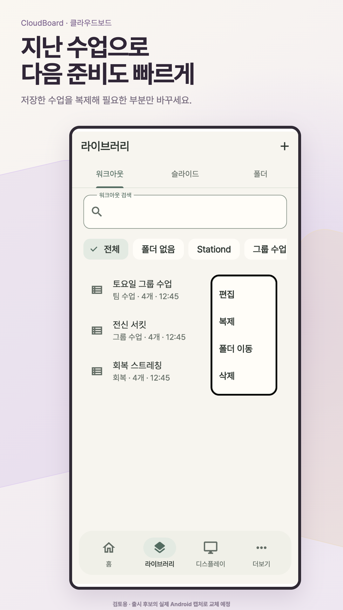
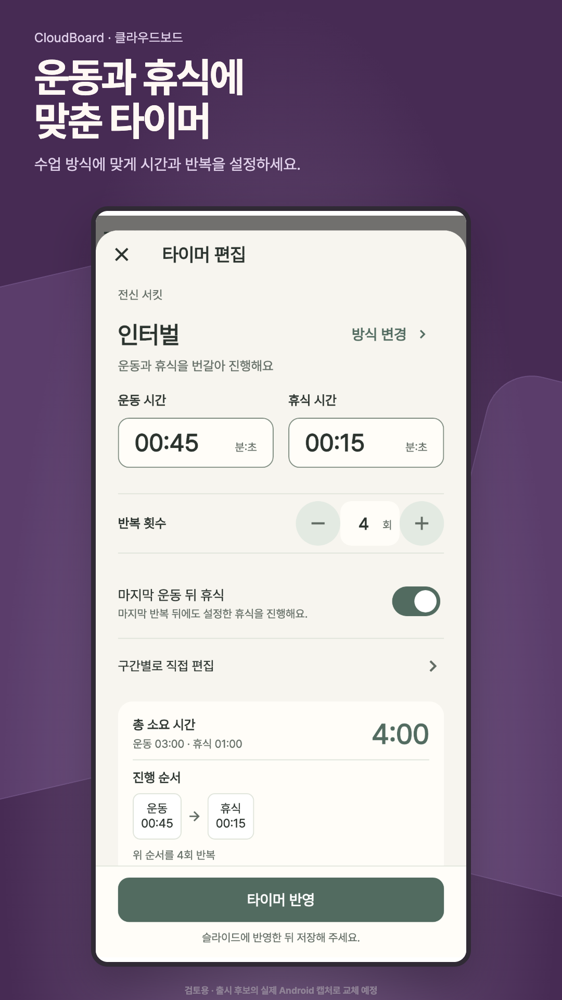
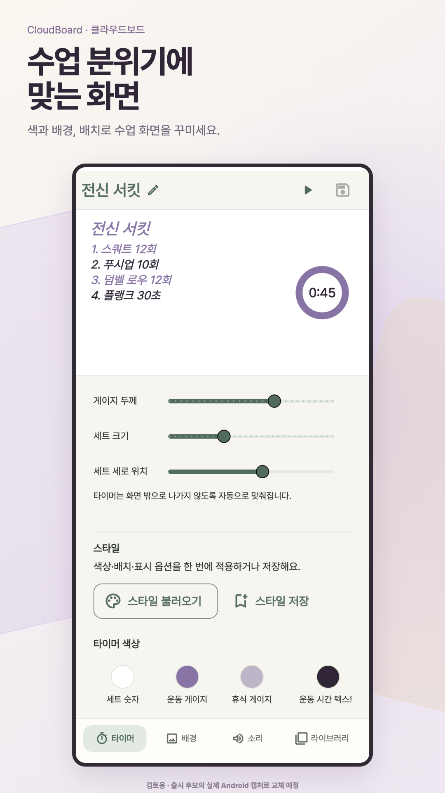
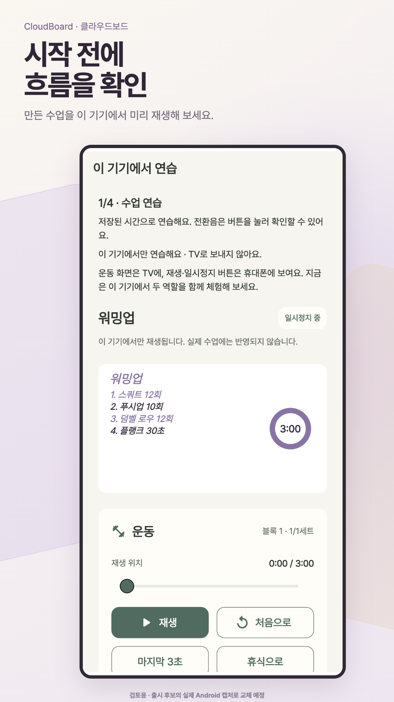
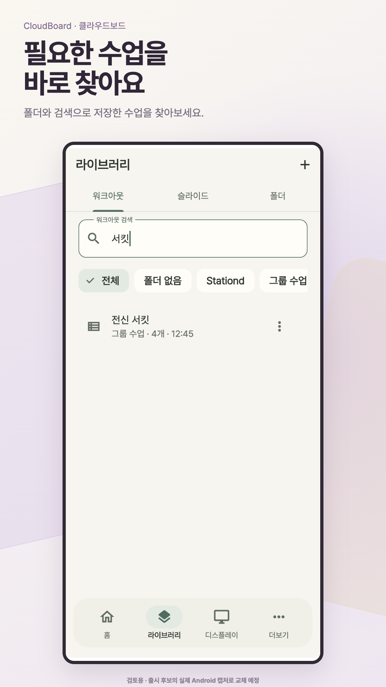
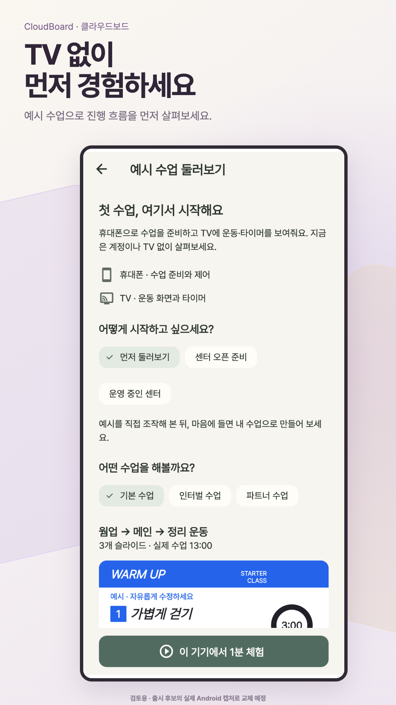

휴대폰에서 연결한 TV 수업의 타이머와 재생을 제어하는 화면
검토용 이미지 · 실제 Android 후보 캡처 교체 전에는 업로드하지 않음

휴대폰에서 연결한 TV 수업의 타이머와 재생을 제어하는 화면

운동 순서와 내용을 편집하는 수업 구성 화면

저장한 수업의 복제 메뉴가 열린 라이브러리 화면

운동 시간과 휴식 시간, 반복 횟수를 설정하는 타이머 편집 화면

슬라이드와 타이머의 색상 및 배치를 조정하는 스타일 편집 화면

내 수업을 TV로 보내지 않고 이 기기에서 연습하는 화면

폴더 분류와 검색으로 저장한 수업을 찾는 라이브러리 화면

가입 전 TV 없이 예시 수업을 선택하고 체험하는 화면